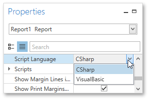
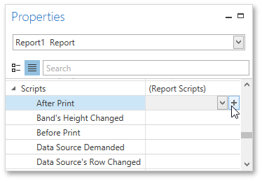
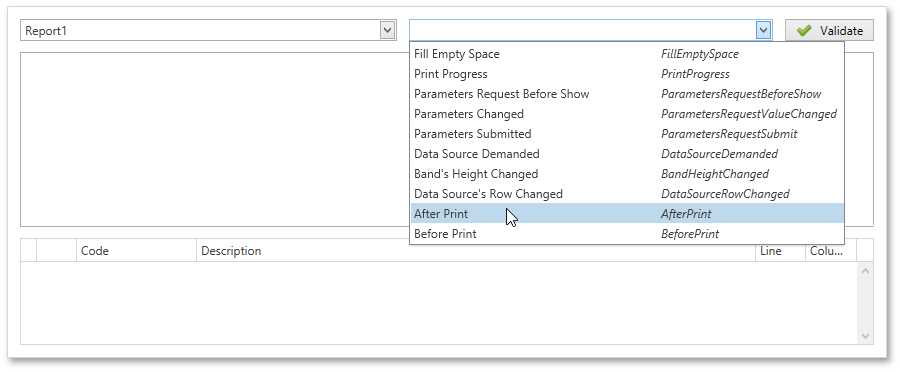
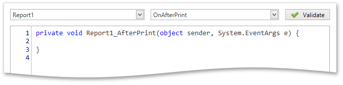
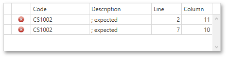

Scripting
This document describes the basic principles of scripting, which can be performed by handling the events of a report, and its bands and controls.
This documents consists of the following sections.
Scripting Overview
Scripts are program commands, placed within the event handlers of the required report elements. And when the corresponding event occurs (e.g., a mouse click), the script code runs. Scripting is made available to extend the standard functionality as far as may be required.
You can write scripts for a report or any of its elements (bands and controls) to be executed when the report is being previewed, printed or exported.
The Report Designer allows you to write scripts using the Script Editor. This editor supports C# and Visual Basic .NET scripting languages. This means that the scripting language is independent from the language used to create the report. The language is specified by the Script Language property of a report. The selected scripting language must be the same for all scripts used in a report.

Maintaining Scripts
Each report element has its own set of events, which are individual for each element type. To handle an event of a report element, do one of the following.
Select the required report element (e.g., on the Design Surface). In the Properties Panel, expand the Scripts property and click the plus button for the event.

Click the Scripts button () in the Toolbar to display the Script Editor. Choose the required report element in the dedicated drop-down list at the left top of the Script Editor. Then, select one of the available events in another list at the right top.

After the event is specified, a code template is automatically generated in the current scripting language and added in the Script Editor.

To check for errors in the report's script, click the Validate button. The validation result is displayed in the errors panel at the bottom of the Script Editor. Double-click the error item in the panel's list to go to the corresponding line of code. If all scripts are valid, the errors panel is empty.
